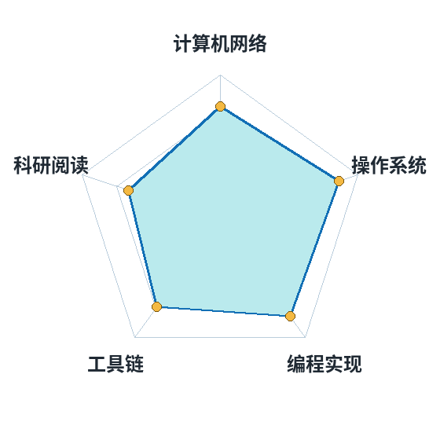

关于我 · Self Introduction
中国科学技术大学 · 计算机科学与技术学院 · 本科生。目前是计算机网络课程的"实验常客"，也是 NexOS/xv6 内核实验的"熬夜常客"。
我的习惯是：学一个协议就抓一次包，学一个内核机制就写一个能跑的最小实现。课堂上知道的"TCP 三次握手"，只有在自己 tcpdump 抓出那三个 SYN / SYN·ACK / ACK 报文之后，才真正变成自己的东西。
平时喜欢写点小工具自动化生活（浏览器自动化、自动评教、抽奖脚本），也喜欢在 Linux 终端里折腾 —— 这个站点本身就是用纯 HTML + CSS 手写、再用 Git 推到 GitHub Pages 上发布的。
这个站点有什么
能力自评 & 课程成绩

| 课程 | 学期 | 成绩 | 一句话感受 |
|---|---|---|---|
| 计算机网络 | 大三上 | 进行中 | 实验比理论课更烧脑，也更有趣 |
| 操作系统 | 大三春 | 93 | xv6 上实现 COW，页表终于不神秘了 |
| 编译原理 | 大三春 | 90 | 亲手把一句代码变成汇编，值 |
| 数据结构与算法 | 大二 | 95 | 基数树、B+ 树都是这里来的 |
| 离散数学 | 大一 | 88 | 图的染色，梦开始的地方 |
顺便说一句：这张表就是 HTML 的
<table> 加几行 CSS 渲染出来的，没有用任何表格组件库。
名片
| 姓名 / 学号 | 崔嘉洋 · PB24111632 |
|---|---|
| 学校 / 专业 | 中国科学技术大学 · 计算机科学与技术 |
| 邮箱 | ustc_alex@mail.ustc.edu.cn |
| 代码仓库 | github.com/A1exthegreat |
| 本站源码 | A1exthegreat/my-web-home（GitHub Pages 自动部署） |
| 本站参考 | 网页示例 myworldandyou.github.io；语法速查 MDN Web HTML |